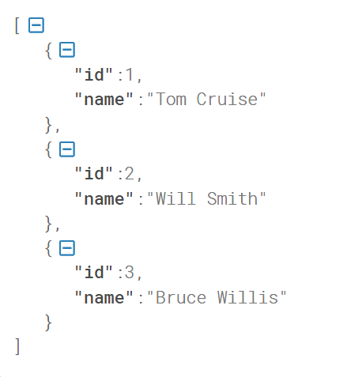

Express is a web application framework for Node.js
To start up express we need a dependency in our package.json:
// package.json {
"dependencies": { "express": "^4.18.3"
}
}
After defining the dependency, we can open a console window and type:
npm install
This downloads our dependency and puts it in the node_modules and we can now import it to a file.
Let's create a new file called app.js. This is where our webserver will be hosted.
In the app.js file we need to import express from node_modules aswell as defining a
port where our server will be running from.
// app.js import express from "express" const app = express();
We can now use the app to make different calls once we define a port where our server will be running
// app.js const port = 8080; app.listen(PORT, () => console.log(`Server is running on port ${PORT}));`
A REST API is used for building web services and sending data to the client.
We mainly use fetch() from a JavaScript frontend file and then display the data in the UI.
It has some specific verbs that is important to become familiar with.
With the types of requests it's important to know that there a different ways to use this verbs.
Let's check this out in the next couple of sections. Lets work around the data right below this
which is a list of objects / ressources:
const people = [ { id: 1, name: 'Tom Cruise'}, { id: 2, name: 'Will Smith'}, { id: 3, name: 'Bruce Willis'}
]
This can simmulate a database for us in the upcoming sections and talk about requests.
A GET request gets one or more ressource(s) from the API, so it's either a list of ressources
or just one ressource.
If we only want one, we typically use the id of a ressource to retrive it.
// ... import express // ... define list of people app.get('/'), (req, res) => { res.send(people)
}
We can now go to localhost:8080 in our browser and see the requested data if the server is up and running.
And this is the data we should be able to see:

Now let's try to access only one of the people by defining another a route in app.js.
Note that this time it requires a path variable from the request
// ... import express // ... define list of people app.get('/:id'), (req, res) => { // access the id const id = req.params.id;// the id is a string as its coming from the request. Lets parse it const parsedId = parseInt(id);// find the specific person const person = people.find(person => person.id === parsedId); if(!person) { res.status(404).send( {data: 'No person with that id'} ) } else {
res.send(person)
}
});
Note that we added some error handling in case the id doesn't match a person.
If we want to access this we could go back to the browser and search for
localhost:8080/1. This should give us Tom Cruise back as json.
When we want to make a POST request we can send data to our server. As we are having examples
without a database, we simmulate that by having a list of people. If we had a database, we could
write queries and actually persist the people we are posting. But for now, we just use a list
and if we post and restart the server, the person will not be persisted. Pretty much every
database has a way of auto increment the id when posting a new ressource. We will handle
it differently in this example as we need to keep track of their id's and we are not aware
of how many people is in the list.
Also we have to use a program such as Postman
to actually make a post request as it has a body containing a ressource.
Let's post Samuel L Jackson to the list:
// ... import express // ... define list of people app.post('/'), (req, res) => { // access the last persons id const lastPerson = people[people.length - 1];// the id is a string. Lets parse it const parsedId = parseInt(lastPerson.id + 1);// Make a new object with the name of the body that was requested const name = req.body.name const newPerson = { id: parsedId, name: name
} people.push(newPerson) res.send(newDrink)
});
The response will be the newly added person as json and if we try and use our GET request, without the server having restarted, we can now see four people with the new one added.
As mentioned before a PUT request updates the whole ressource based on id. So it has pretty much the same approach as getting one element, but now we want to edit it with the requested body.
// ... import express // ... define list of people app.put('/:id', (req,res) => { const id = parseInt(req.params.id); const person = people.find(person => person.id === id); if(!person) { res.status(404).send({ data: `No person found with id ${id} found` }) } else { const newName = req.body.name; person.name = newName; res.send(drink);
}
});
This updates the ressource from the requested body, and the response sends back the new edited person
Lets delete Tom Cruise!
// ... import express // ... define list of people app.delete('/:id', (req, res) => { const id = parseInt(req.params.id) const person = people.find(person => person.id === id) if(!person) { res.status(404).send({ data: `No person found with id ${id} found` }) } else { const index = people.indexOf(person); people.splice(index, 1); res.send(person);
}
});
If we send a DELETE request with the id 1, we will delete Tom Cruise from the list and Tom Cruise will be sent back to us as json.
If we want to serve static files, we need to add a line after importing express.
app.use(express.static('/PATH/TO/FILES'))
This makes it possible for us to serve static templates from the given folder without having
any processing by the server. This means that we cannot dynamically update the template.
Lets make a route to serve a static template:
app.get('/', (req, res) => { res.sendFile(__dirname + '/PATH/TO/FILES/index.html')
Whatever is written in the html file will we displayed to the user when hitting this endpoint.
We can also make use of the fs readFile as mentioned in another module. This way it's possible break
the UI into components and then connect them in one file and send it.
A very sad way of doing it.